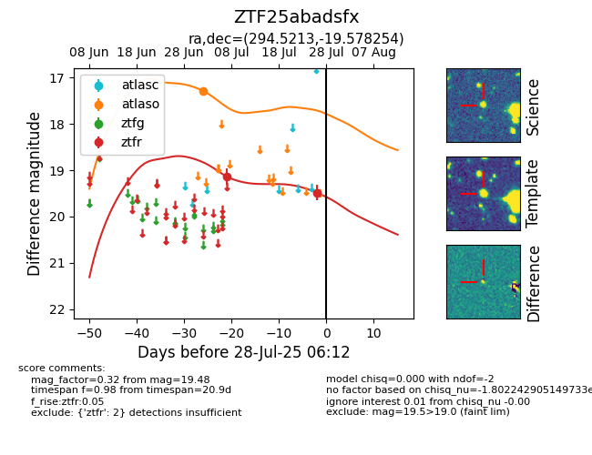

Target ZTF25abadsfx at 2025-07-28 06:12, see:
FINK: fink-portal.org/ZTF25abadsfx
Lasair: lasair-ztf.lsst.ac.uk/objects/ZTF25abadsfx
ALeRCE: alerce.online/object/ZTF25abadsfx
alt names
ZTF25abadsfx (ztf,fink)
coordinates:
equatorial (ra, dec) = (294.5213,-19.57825)
galactic (l, b) = (20.0288,-18.80174)
photometry
last atlaso=17.29, ztfr=19.48
1 atlaso, 2 ztfr detections
